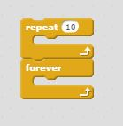
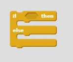
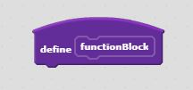

Variables are values that are paired with an associated name.
An example of setting a variable in Python is score = 0.
Variable in Scratch

A real-life analogy of a variable is a name tag with a name on it. The name tag stores someone's name as a variable stores a value.
Loops are used to repeat code until a certain condition is met. There are for and while loops.
An example of a loop in Python is for i in range(4):
forward(10)
Loop in Scratch
A real-life analogy of a loop is while it is sunny, go for a walk. You will go for a walk until it is no longer sunny.
Conditionals are if-then-else statements. The code runs based on a series of boolean statements.
An example of a conditional in Python is if user_input == True:
print("True")
Conditional in Scratch
A real-life analogy of a conditional is if it is raining, then I will drive, else I will walk.
Functions are procedures that you create to make the code neater and easier to use multiple times.
An example of a function in Python is def functionName():
print("string")
Function in Scratch
A real-life analogy of a function is making a list of things and referring back to the whole list, rather than rewriting each individual item.